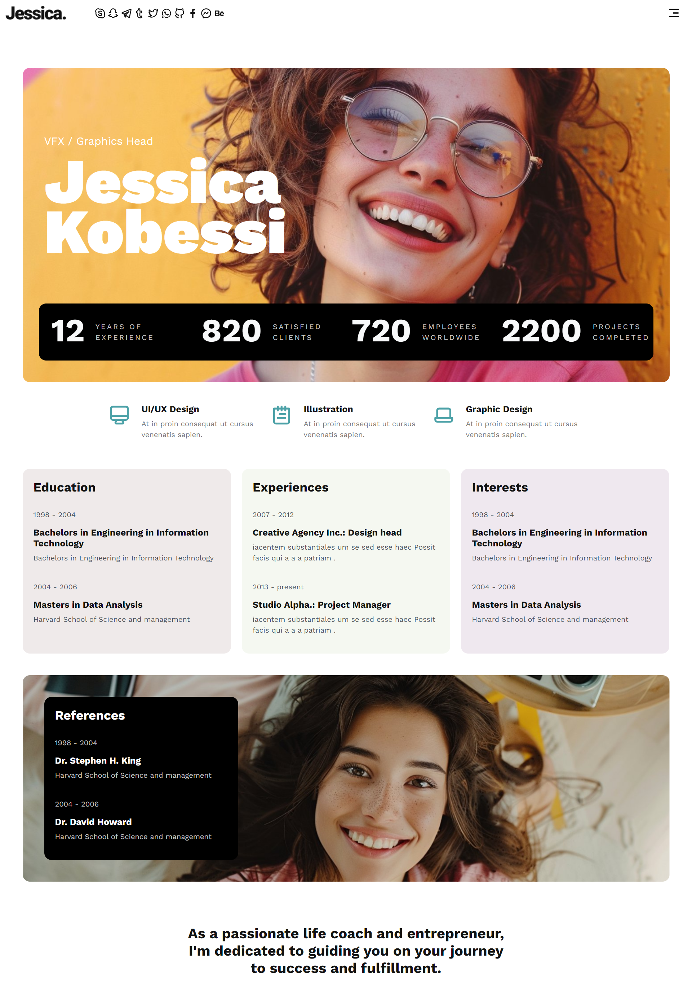
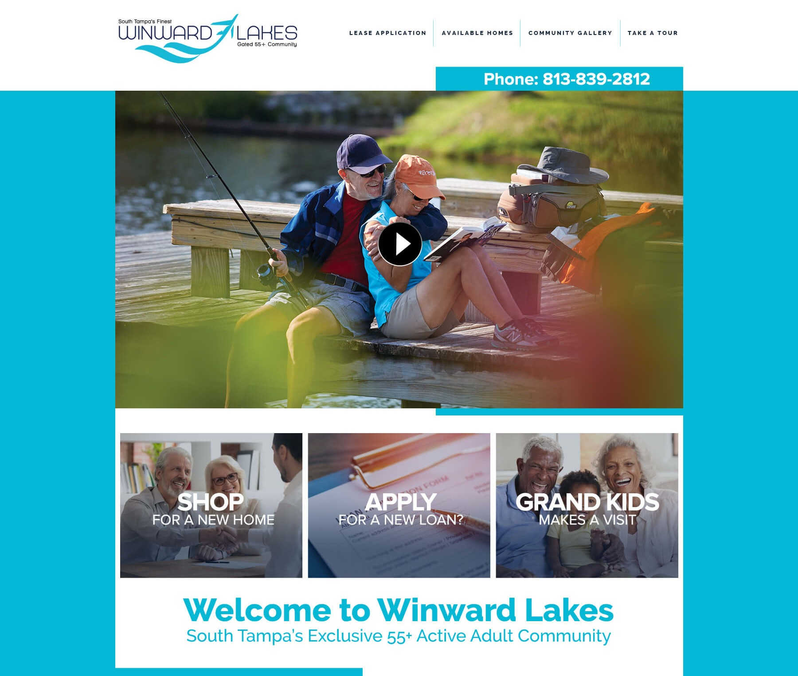
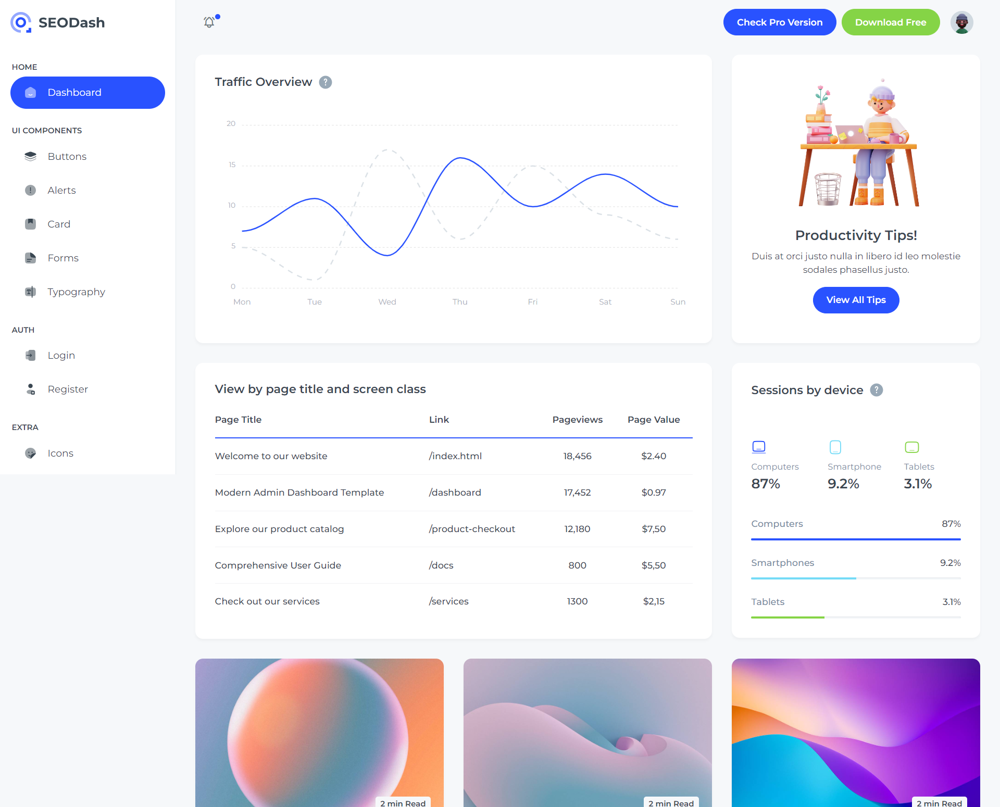

My Protfolio





Hey there! I’m Rupok, a front-end web developer with over two years of experience. I love transforming design concepts into responsive and visually appealing websites. I’m proficient in HTML, CSS, JavaScript, Tailwind CSS, jQuery, and React, which allows me to craft smooth and enjoyable user experiences.I'm passionate about what I do and always aim to provide great value to my clients.


Hi, I'm rupok! I'm a passionate web developer with a love for creating beautiful and functional websites. I enjoy exploring the latest web technologies and continually improving my skills in front-end and back-end development. In my spare time, I enjoy reading tech blogs, hiking, and experimenting with new programming languages.